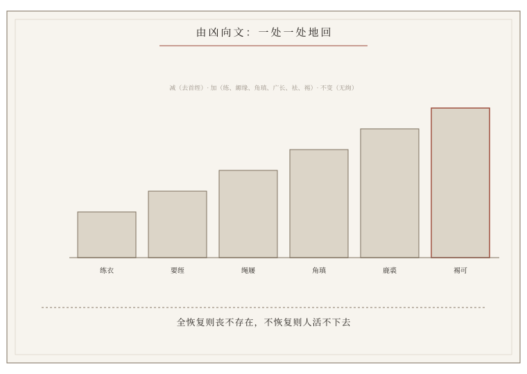

檀弓上 · 三·一百一十 · 第 313 课
练：练衣黄里，縓缘；葛要绖，绳屦无絇，角瑱；鹿裘衡长袪；袪，裼之可也。
说什么事：小祥之服。练过的中衣，黄为里、縓为缘；腰上只余葛绖；麻绳之屦，去其头饰；角制的充耳；鹿皮之裘，横而广之、又长之；裘袖有了袪，就可以在裘上加裼衣了。
落在哪一层：由凶向文的渐复。论「一寸一寸地回到文」。
为何编在此位：本批自 304 论池、305 论椑、306 论六事、309 论巾、311 论奠时、312 论哭，皆在丧的「质」一侧；此课收在「文」的开始——丧服开始一件件恢复修饰。
【经】練，練衣黃裏，縓緣。葛要絰，繩屨無絇，角瑱。鹿裘衡長袪。袪，裼之可也。
【注】小祥練冠，練中衣，以黃為內，縓為飾。黃之色卑於纁。縓，纁之類，明外除。瑱，充耳也。吉時以玉，人君有瑱。衡當為橫，字之誤也。袪，謂褎緣袂口也。練而為裘，橫廣之，又長之。又為袪，則先時狹短無袪可知。吉時麛裘。裼，表裘也。有袪而裼之，備飾也。《玉藻》曰：「麛裘青犴，褎絞衣以裼之。」鹿裘亦用絞乎？
【疏】「练」，小祥也；小祥而著练冠、练中衣，故曰练也。「练衣」者，练为中衣。「黄里」者，黄为中衣里也；正服不可变，中衣非正服，但承衰而已，故小祥而为之黄拾里也。「縓缘」者，「縓」为浅绛色也，「缘」谓中衣领及褎缘也；里用黄而领缘用縓者，领缘外也，明其外除，故饰见外也。「葛要绖」者，亦小祥后事也；小祥，男子去葛绖，唯余要葛也。「绳屦」者，谓父丧，菅屦卒哭，受齐衰蒯藨屦，至小祥受大功绳麻屦也。「无絇」，屦头饰也，吉有，丧无。「角瑱」者，「瑱」，充耳也，人君平常吉用玉为之，以掩于耳；在初丧亦无，至小祥微饰，以角为之。「鹿裘」者，亦小祥后也；为冬时吉凶衣里皆有裘，吉时则贵贱有异，丧时则同用大鹿皮为之，鹿色近白，与丧相宜也。「衡长袪」者，衡，横也；袪，褎缘口也；小祥之前，裘狭而短袂，又无袪；至小祥稍饰，则更易作横广大者也，又长之，又设其袪也。「练而为裘」者，「为」犹作也；前时已有裘，但短小，至小祥更作大长者，横广之，又长之为袪，更新造之，又加此三法也。「袪，裼之可也」者，「裼」谓裘上又加衣也；吉时裘上皆有裼衣，丧已后既凶质，虽有裘，裘上未有裼衣；至小祥，裘既横长，又有袪为吉转文，故加裼之可也。案如此文，明小祥时外有衰，衰内有练中衣，中衣内有裼衣，裼衣内有鹿裘，鹿裘内自有常著襦衣。注「黄之」至「外除」：纁是赤色也，其色华美；黄虽是正色，质卑于纁。《尔雅·释器》云「一染谓之縓，三染谓之纁」，故言纁类也；华者在外，故云「明外除」。注「吉时以玉，人君有瑱」：案吉时君大夫士皆有瑱，此唯云「人君有瑱」者，以经云「角瑱」，故郑云「吉时以玉」据人君吉时，又云「人君有瑱」，故知人臣凶时无瑱。注「《玉藻》」至「绞乎」：引《玉藻》者，以此经鹿裘直云「裼之可」，不知裼用何衣；大者曰鹿，小者曰麛，同类之物，麛裘既用绞为裼，则鹿裘亦用绞乎？「乎」者，疑辞；然麛裘用青犴为褎，则鹿裘之褎，亦用青犴也。
练 小祥之祭，父母丧后十三月。练，煮练过的丝帛，色白而柔。
练衣 练过的中衣。中衣，承衰之衣，非正服。
黄里 以黄为里。里，衣之内。
縓缘 以縓为领缘。縓，浅绛色，一染而成。
葛要绖 腰上只余葛绖。要，腰。
绳屦 麻绳编的屦。
絇 屦头的装饰。吉有，丧无。
角瑱 角制的充耳。瑱，塞耳之物。
鹿裘 鹿皮之裘。
衡长袪 横而广之，又长其袖。衡，注「当为横」；袪，袖口。
裼 裘上再加之衣。
麛裘青犴 《玉藻》语。麛，鹿子；犴，胡地野犬。
小祥之服：练过的中衣，黄为里、縓为缘；腰上只余葛绖；麻绳之屦，去其头饰；耳上角制的充耳；鹿皮之裘，横而广之、袖又长之；袖有了袪，就可以在裘上加裼衣了。
此节是一张清单：六件东西，每件都从一个状态挪到另一个状态。
注疏的办法是一一对勘：礼之常（凶）如何，小祥如何，吉时如何。三者一比，位移就出来了。
六件之中，有减（去首绖），有加（练、黄里、縓缘、角瑱、广长、袪、裼），有不变（无絇）。丧服之复，不是整体回到吉，是一处一处地回。
第一层 「可也」二字的分量 末句「袪，裼之可也」，注说「加裼之可也」。这个「可」，是礼的许可语，不是命令语。它不说「当裼」，只说「可以裼」。
为何用「可」？因为此时还在丧中，加裼衣已近于吉；礼不禁止，也不强求。这是礼在最紧处留的一道缝：你可以稍微体面一点，但不必。
礼书中「可也」的用法，多在这种「近于文而未至」的地方。它是礼的弹性所在。
第二层 「明外除」的道理 疏解释为何里用黄、缘用縓：黄是正色而质卑，縓是纁之类（华美）；里用卑、外用好，因为「外除」——衰是从外面一层层除去的。
这个说法极精：丧服的解除，由外而内。先除最外之衰，再除中衣，再除内之裘。所以修饰也从外做起：外面先见文，里面仍是质。
礼的结构，在此显出一种秩序感：不是同时变，是依次向外剥。
第三层 注中的一处疑辞 注末引《玉藻》「麛裘青犴，褎绞衣以裼之」，然后问：「鹿裘亦用绞乎？」——「乎」是疑辞，郑玄自己也不确定。
注家有疑，是礼学的常态。此处不掩饰，把疑问留在注里。读者当知：礼文有缺，注家亦不能尽断；遇到这种地方，宁可存疑，不可强解。
第四层 「无絇」的不变 六件皆在变，唯「无絇」不变。絇是屦头的装饰，最显眼的一处。礼在最显眼的地方留着凶——这是故意的：让你一眼看去，仍知此人在丧中。
丧服之复，须留一处「凶」的标记。这一处若也去了，服就与吉服无异；礼就失了它的辨识。
与今日何干 今人服丧，多在一周年后换深色素衣。此节给的尺是：恢复要一处一处地来，且要留一处仍可辨的标记。全恢复，则丧不存在；不恢复，则人不能活下去。
| 左 | 右 |
|---|---|
| 练 | 小祥 |
| 练衣黄里 | 中衣之变 |
| 縓缘 | 饰见外 |
| 葛要绖 | 减 |
| 绳屦无絇 | 不变 |
| 角瑱 | 微饰 |
| 鹿裘衡长袪 | 三法并加 |
| 裼之可也 | 许可，非命令 |
画一处丧次之内，视点平视。画面中并立三具衣形（只画衣，不作人面）：最左一层为衰（麻质、粗糙、色深），中层为中衣（练过、色白、领缘一道浅绛），最内层为鹿裘（皮色、袖口加长、袖端另有一道缘）。三层由外而内叠置，可见层次。衣形之旁的小案上，另放一双麻绳之屦、一对角制的小圆片。不写文字、不画人面细节。赭色只用在申衣的领缘与袖缘那道浅绛，与那对角片。
